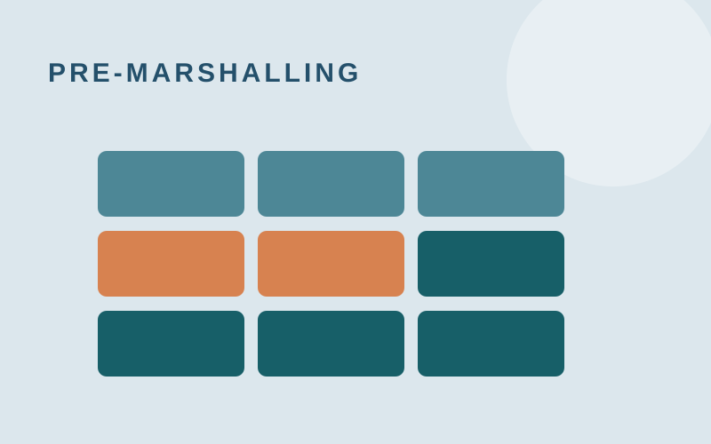
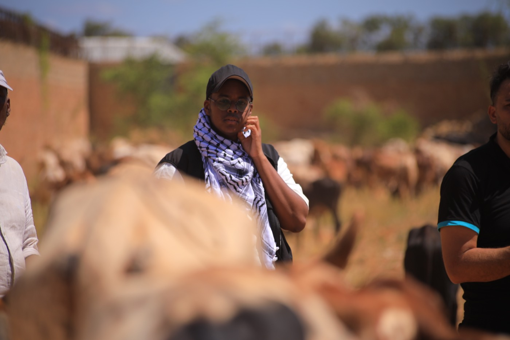

Youth activities
Around 60 children came together for learning, football, and new friendships. See why youth work matters so much to me.
See the activitiesHere are five projects and activities that are important to me.
Around 60 children came together for learning, football, and new friendships. See why youth work matters so much to me.
See the activitiesCan a grassland withstand invasive plants? We built a simulation to explore what happens when species compete.
Technologies: Python, NumPy, Pygame
Read the PDF
How can containers be rearranged with fewer moves? Our group tackled this puzzle with a search algorithm.
Technologies: JavaScript, C, Node.js
Read the PDF
Two trips to Somalia with Hasene: translating for my team and helping deliver supplies to local communities.
See the volunteer work
With SSO, I helped make the local election easier to understand. National broadcaster DR captured part of the day.
See the event